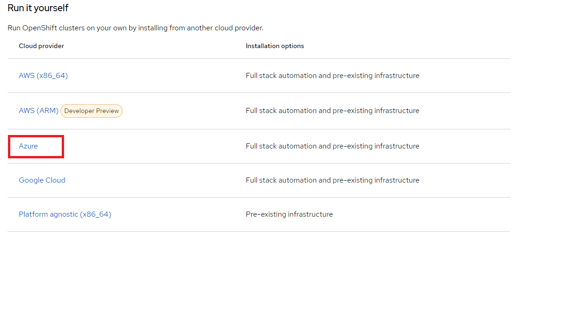
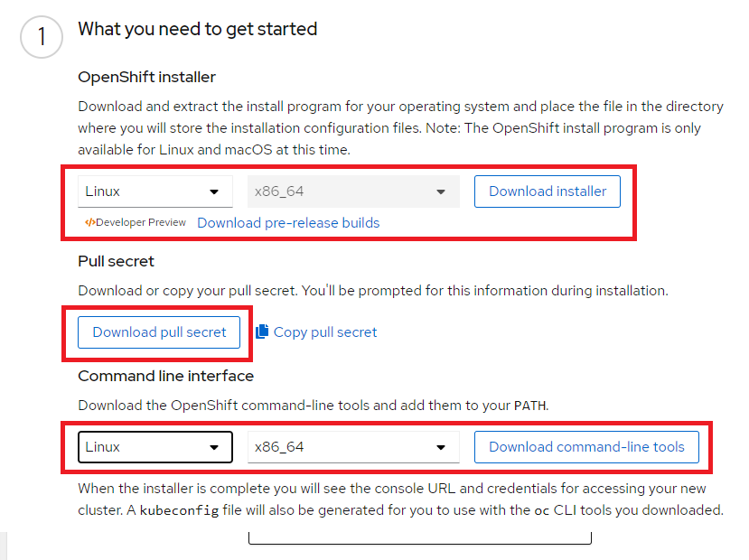

Dev install OpenShift 4.8 on Azure with customizations
In this document learn to install OpenShift on Azure.
In particular, this will document the config file needed by the installer for a custom install that meets the following requirements:
Architectural decisions for this installation
- Installer provisioned infrastructure
- OpenShift administrator-level credential secret in the kube-system namespace. (As an alternative, you can put Cloud Credential Operator (CCO) into manual mode)
Prerequisites
You will need:
- Azure environment set up according to the OpsInstallOpenShiftOnAzure documentation. In particular, review details about account configuration, account limits, public DNS zone configuration, required roles, creating service principals, and supported Azure regions.
- Firewall configured to allow access to sites.
- Azure CLI. May already be installed on Bastion. See How to install the Azure CLI for your operating system.
- Access to OpenShift Container Platform.
ssh-keygeninstalled.- Linux Bastion with 500 MB of local disk space and
ssh,tar. - A Red Hat account.
Log on using az login. Then use az account show to see the subscription id, the tenant id, such as:
[
{
"cloudName": "AzureCloud",
"homeTenantId": "4e7730a0-17bb-4dfa-8dad-7c54d3e761b7",
"id": "f9700497-11d3-4005-8b1d-3bf45a667424",
"isDefault": true,
"managedByTenants": [],
"name": "Microsoft Azure Sponsorship",
"state": "Enabled",
"tenantId": "4e7730a0-17bb-4dfa-8dad-7c54d3e761b7",
"user": {
"name": "Bruce.Kyle@ibm.com",
"type": "user"
}
}
]
NOTE: if you have multiple subscriptions, use
az account set --subscription mysubscriptionwheremysubscriptionis the GUID or the name of the account you want to make default.
You will need the id is the subscriptiond id and tenantId is the tenant id you will need later.
You should also have several items from the service principal from the administrator.
- baseDomain: such as
ibmtechgarage.com - appId: it will be a GUID
- password: it will be the password, probably a GUID generated when the service principal was created
IMPORTANT: The
appIdand thepasswordare sensitive and should not be checked into code.
Generate a key pair for cluster node SSH access
You must provide the SSH public key during the installation process.
mkdir ~/.azkeys
cd ~/.azkeys
ssh-keygen -t rsa -b 2048 -N '' -f ./azkeys
NOTE: Generating
rsakey so that OpenShift Container Platform cluster can use FIPS Validated / Modules in Process cryptographic libraries on the x86_64 architecture.
View the public key.
cat ~/.azkeys/azkeys.pub
Add the SSH private key identity to the SSH agent for your local user.
eval "$(ssh-agent -s)"
# responds with something like Agent pid 814
Add SSH private key to the ssh-agent.
ssh-add ~/.azkeys/azkeys
# responds with something like Identity added: /home/bruce/.azkeys/azkeys (bruce@LAPTOP-SLIV8CB4)
Get the installation program
Create a location to download your files, such as.
mkdir ~/openshiftinstallerfiles
To download the installation file:
- Download the Infrastructure Provider page on the OpenShift Cluster Manager site.
IMPORTANT: Do not select the top Azure managed services. This is ARO that is a managed service running on Azure. We are selecting intaller-provisioned infrastructure to give us the most flexibility in version, license, sizing, networking.
Select:

Click Installer-provisioned infrastrcture box.
Download the installation program for your operating system, and place the file in the directory where you will store the installation configuration files.

- Copy the file to a known location
Move the file to your ~/openshiftinstallerfiles directory, such as mv /mnt/c/Users/6J1943897/Downloads/openshift-install-linux.tar.gz ~/openshiftinstallerfiles
Extract the installation program.
cd ~/openshiftinstallerfiles
tar xvf openshift-install-linux.tar.gz
# check to see the files using ls. you should see README.md and openshift-install
- Download your installation pull secret from the Red Hat OpenShift Cluster Manager.
Return to the OpenShift Cluster Manager page. Click Download pull secret button.
Create the config file
Create a folder for your config file.
mkdir ~/azureconfig
cd ~/openshiftinstallerfiles
Create the config file.
./openshift-install create install-config --dir ~/azureconfig
At the prompts, use the arrow keys to select azure then type enter.
Customize the installation config file
You can customize the
When the installer is complete you will see the console URL and credentials for accessing your new cluster. A kubeconfig file will also be generated for you to use with the oc CLI tools you downloaded.
Configure StorageClass for RWX
TFor use with Cloud Paks and customer applications, you will want to dynamically provision ReadWriteMany (RWX) storage, which provides that your storage volume can be mounted as read-write by many nodes.
You can use either OpenShift Container Platform storage (OCS) or OpenShift Data Foundation (ODF) Operators or set Azure Files StorageClass.
OpenShift Container Storage (OCS) has been updated to OpenShift Data Foundation (ODF) starting with version OCP 4.9. For more information, see either:
- OpenShift Container Platform storage overview
- Deploying OpenShift Data Foundation on Azure Red Hat OpenShift.
OR if you prefer, you can set up Azure Files as your StorageClass. See Create an Azure Files StorageClass on Azure Red Hat OpenShift 4.
Reference
Contributors
March 22, 2022